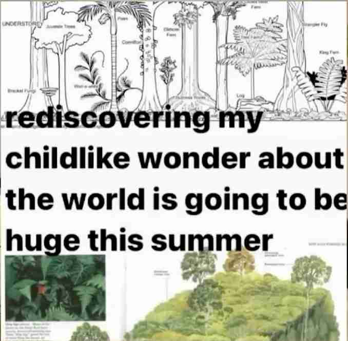
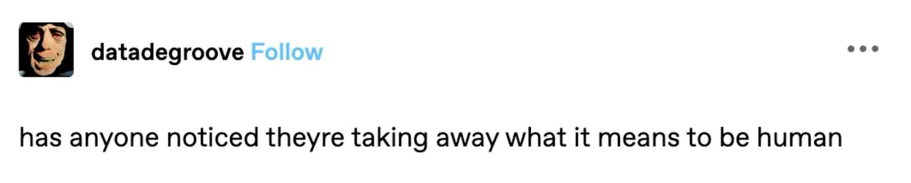
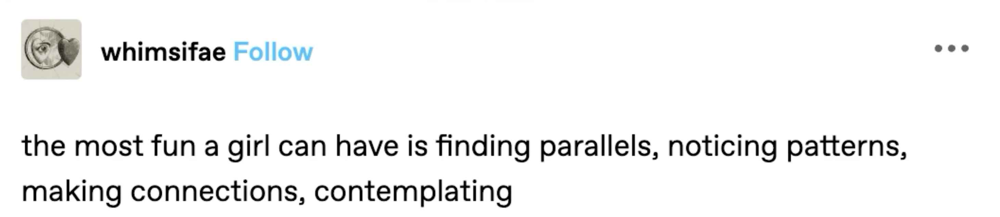
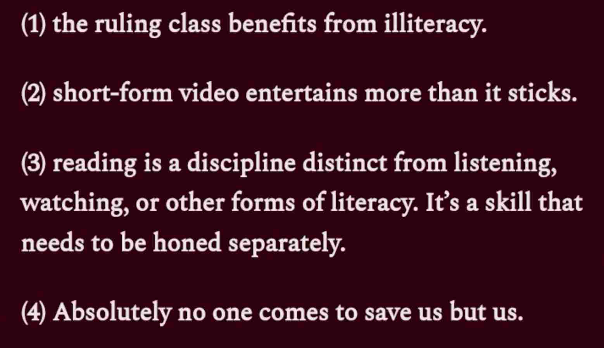

Creating a digital garden to end my doomscrolling 🪴
What we're going to be talking about today is a very concrete tool that can help you be a more interesting person you might have heard the phrase in order to be interesting you need to be interested instead of putting all of your thoughts and energy into thinking about like how can I be more of an interesting person I feel like I'm a boring person all of this stuff finding a way to channel your own curiosity and find what you're interested in and really go full force into your interests that's how you're going to be a more interesting person

I've been seeing so much content especially on YouTube about consumption about people like taking a month off of social media 📵 and then sharing their experience with it people really really interested to see how that's going and I think it's because we've gotten to a point where we're so fatigued with over consumption we are all scrolling all day long we are all intaking more information than we ever should be it's like if a pilgrim saw the amount of information that we are intaking on a single day they would just burst 🤯 they would explode they wouldn't know what to do with it and frankly I think even we don't know what to do with it most of the time and I think the blanket advice of create more than you consume is good advice but it's incomplete complete advice because now we're in such a routine of consuming so much and consuming in a way that's really really shallow and I think what you first have to do in order to kind of break yourself out of that pattern is to
Become a more intentional consumer!!


One avenue into being a better consumer is taking notes. Not just taking a notes but building a digital garden for ourself. A Digital Garden is a place that makes it possible to make connections 🕸️ between all of the things that you are consuming so you're not just taking notes in a notebook or writing a blog where things are going to be all chronological you can write about a certain topic and you can connect it to all of the other things that have to do with that topic or have to do with something adjacent to it and you can see the ways that all of your interests are interconnected like you can see it as if you're looking at the ways that all of the trees are connected below ground 🌳🧬 you can actually see the way that your thought processes your interests your takeaways are starting to all be interwoven!!
We're really in a days where we're consuming online there's so much access to so many resources
that can be great they're more accessible than ever they can literally change your life.
But when you're consuming them and not really giving your mind any space or time or intentionality
to process what you're consuming then most of it goes in one ear and out the other!!
Most of the time inviting your own thought processes into the conversation is how art is made

Ayan Artan has a substack article ✍️ titled in defense of pretention she makes some really incredible points about the rise of anti-intellectualism the falling literacy rates and just all of the things that are implicated when we devalue art and reading in our society how that really opens the door to a level of callousness and inhumanity that we should not get comfortable with and so like I said before the phrase create more than you consume has its place and validity but there's also something to be said for I'm not going to speak more than I listen any art that has ever been made has been influenced by all of the art that that artist consumed before they made that piece of art.
Here's a little excerpt from the article
"I am a bundle of all the work I have ever come into contact with
I think I can trace parts of my personality to the Anthony bouraine documentaries my grandmother used to watch
my sense of humor is a mix of my mother's dryness and the work of Rick Riordan
if we all see the same five Clips on Tik Tok the same three films, how will we ever be individual!
Part of my love for the Arts comes naturally from my profession as a writer
the irony here is that I do not have the words to adequately formulate just what this craft has given me
if I was forced to I'd sum it up as power these words I write are little pieces of me
it's why I'll never buy into the separate the art from the artist nonsense
this work did not birth itself it could not birth itself it needed my pen to make it be first
there were only ideas but in my hands stories and arguments and analysis live "
As artists not consuming other art is not an option then let's stop putting so much energy into shaming ourselves for consumption and still say okay if I am going to consume this material let's make sure that I am there as I am consuming it and I am active as I am consuming it. It's the difference between passively watching a TV show and scrolling on your phone as you're doing it and watching the TV show and taking notes as you're doing it and pausing when you have an interesting thought pausing when you think oh that reminded me of this oh that reminded me of this oh I didn't like that part why didn't I like that part what would I have done differently it's leaning in.
Odyssey the YouTuber, laid out the pros of having a note-taking process:
- Forces you to slow down 🐢 : In a world that constantly pushes for speed, intentional note-taking encourages a slower, more deliberate approach to learning, fostering deeper understanding and retention. This combats the common issue of consuming vast amounts of content without truly remembering it.
when it comes to learning and curiosity and creativity, you've got to go slow to go fast!
- Provides instant feedback ⚡ : When you attempt to rephrase a concept in your own words, it immediately reveals whether you genuinely grasp the information. If you struggle to articulate it, it's a clear sign that you need to revisit and delve deeper into that concept.
- Visualizes interconnected ideas 🗺️ : Unlike chronological notes in a traditional notebook or blog, a digital garden allows you to see your ideas as a network or web. This enables connections between notes taken months apart, potentially sparking new insights for essays, speeches, or creative projects.
How to Build a Digital Garden
- Source Material Notes 📚 : Take notes directly from the content you're consuming (eg. books, shows), focusing on quotes, observations, and initial reactions.
#understandingOtherPeoplesWork - Decontextualized Notes 🧠 : After processing the source material, write down your own thoughts, connections, and insights about the broader world.
#creatingYourOwnWork - Tagging 🏷️ : Use general but specific tags to categorize notes by themes, creating a network of interconnected ideas.
- Tools: While various tools can be used (Obsidian, Notion, personal websites), the core concept is creating a web of interconnected notes. The video mentions Oddyseas' YouTube tutorials for practical guidance on using Obsidian
Key Factors of a Digital Garden
- Topography over Timelines: Organized by relationships and links, not chronologically by publication date.
- Continuous Growth 🌱 : Never finished, constantly evolving like a real garden.
- Imperfection and Learning in Public 📢 : Embraces rough edges and doesn't claim to be a permanent source of truth.
- Playful, Personal, Experimental 🎨 : Gardens are non-homogeneous by nature. You can plant the same seeds as your neighbor but you'll always end up with a different arrangement of plants.
- Content Diversity: Not just a connection of interlinked words. While linear writing is an incredible medium that has served us well for a little over 5,000 years, it is daffed to pretend working in a single medium is a sufficient way to explore complex ideas. We can include various media like podcasts, videos, diagrams, and sketches.
- Independent Ownership: Gardening is about claiming a small patch of the web for yourself 🏡, one you fully own and control

A blog can't be considered as a digital garden. It can be a tool that helps you create a blog. But I think that your digital garden should be a place where you can set aside the performance. You can set aside the perfectionism and just have a exploration space for yourself to cultivate your interests and evolving from a consumer to a creator. Again, see the way the roots are connecting below ground. And it's really hard to do that when you're thinking about it as a final product like a blog.
A digital garden is for you. Like, I'm not talking about the garden that you put on your front lawn just to impress your neighbors. I'm talking about the garden that's in the back that you're experimenting with. You're seeing if you can actually keep those flowers alive.
Turning rough notes into new ideas
You don't have to make a completely new idea. Your idea is going to be influenced by other ideas. But how you're going to go from taking notes on somebody else's work into creating your own work is byThat's the whole point of digital gardening. training your attention to spot the snags of curiosity and then leaning into that. This process is beneficial not just for writers but for any artist, as "writing is thinking".